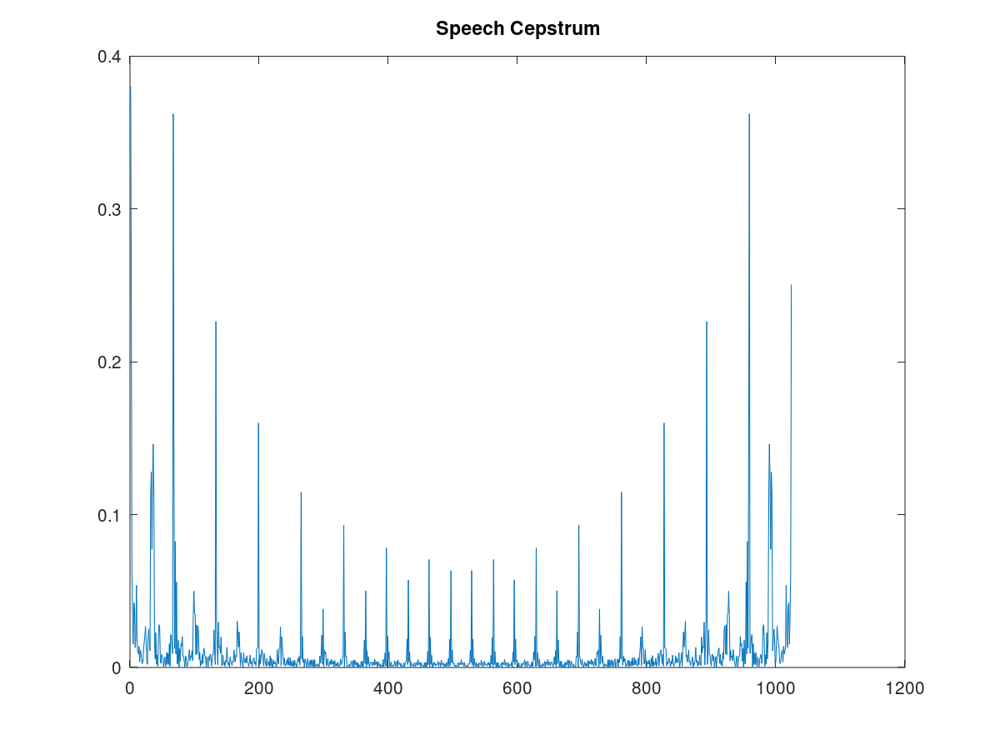
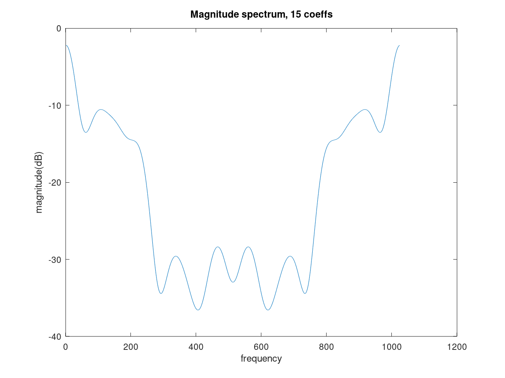
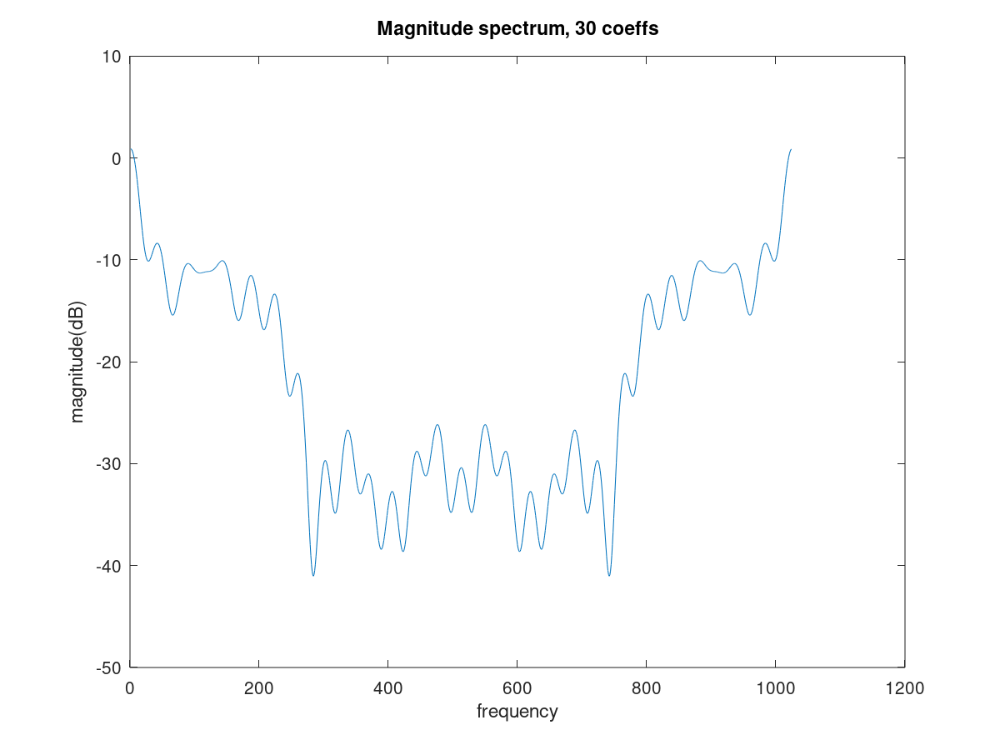
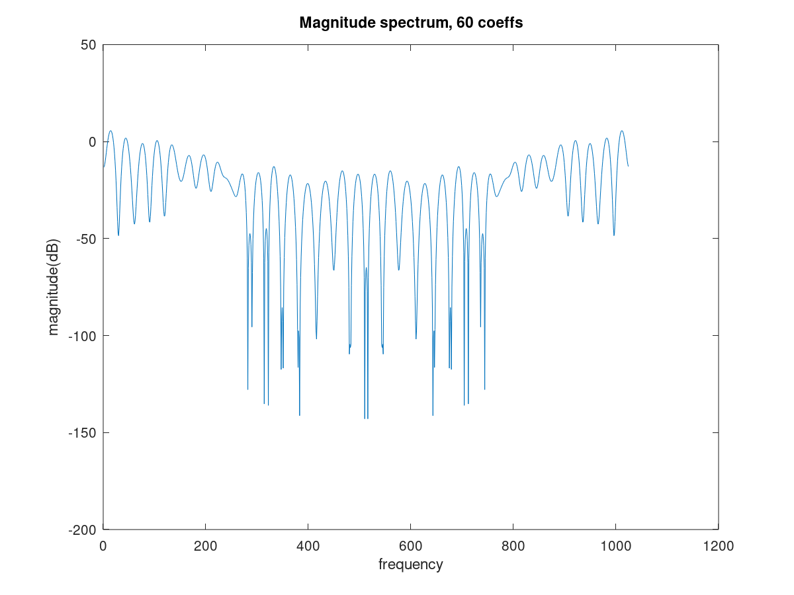

as2_Q4
pkg load control;
pkg load signal;
pkg load image;
dur = 1024;
a = [1.000000, -0.932071, 0.153281, 0.234292, -0.241299, 0.151919, -0.208041, 0.097114, 0.089746, -0.232720, 0.104797;];
fs = 8000;
f0 = 120;
t = 0:1/fs:0.5;
imp = t;
imp = imp*0;
iter = floor(fs/f0);
for i= 1:iter:4000
imp(i) = 1;
end
y = imp;
for i=11:1:4000
for j=2:1:11
y(i) = y(i) - y(i-j+1)*a(j);
end
end
xh2=zeros(1024,1);
per = 10;
E=0.4894;
ak=a;
for i=0:1024,
ex = exp(-(0:per)*1i*(i/1024 * 2 * pi));
xh2(i+1) = E/(abs(ex*ak')).^2;
end
x = sqrt(xh2);
ffty = abs(fft(y, dur));
Cep = log(ffty);
cep = real(ifft(Cep));
figure(1)
plot(abs(cep))
title('Speech Cepstrum')
cep = cep';
filt_c = zeros(dur,1);
dur = 15
filt_c(1:dur) = 1;
cepfilt1 = real(fft(cep.*filt_c));
figure (3)
plot(20*log(abs(cepfilt1)))
title('Magnitude spectrum, 15 coeffs')
xlabel('frequency')
ylabel('magnitude(dB)')
dur = 30
filt_c(1:dur) = 1;
cepfilt2 = real(fft(cep.*filt_c));
figure (4)
plot(20*log(abs(cepfilt2)))
title('Magnitude spectrum, 30 coeffs')
xlabel('frequency')
ylabel('magnitude(dB)')
dur = 60
filt_c(1:dur) = 1;
cepfilt3 = real(fft(cep.*filt_c));
figure (5)
plot(20*log(abs(cepfilt3)))
title('Magnitude spectrum, 60 coeffs')
xlabel('frequency')
ylabel('magnitude(dB)')
dur = 15
dur = 30
dur = 60
